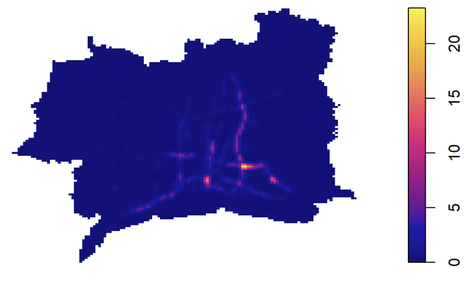
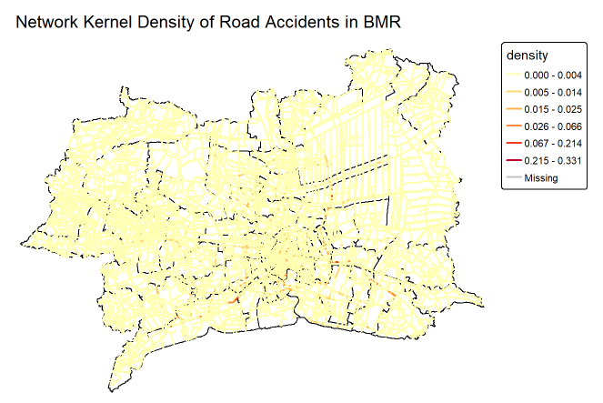
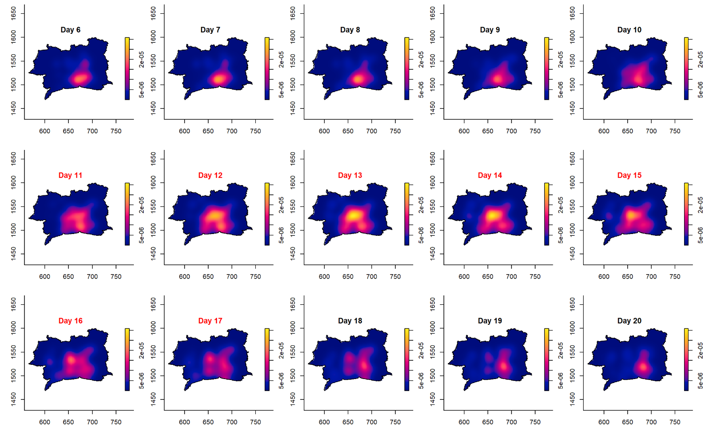
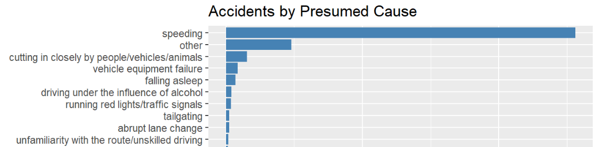

Topic: Road Traffic Accidents in the Bangkok Metropolitan Region
Lin Yuxuan
Content Page
Overview
Research Question & Objectives
Study Area & Data
Analytical Approach
Key Finding 1: Spatial Concentration
Key Finding 2: Network-Level Hotspots
Key Finding 3: Temporal Patterns
Accident Characteristics
Limitations
Public-Safety Implications
1. Overview
Road traffic accidents are a public-safety issue with a spatial and temporal signature
Understanding where and when accidents concentrate can guide resource allocation
This study applies spatial and spatio-temporal point-pattern analysis to road accidents in the Bangkok Metropolitan Region (BMR)
2. Research Questions
How is accident intensity distributed across space and time in the BMR?
Do accidents show significant clustering beyond complete spatial randomness?
Does the road network change the interpretation of accident concentration?
What do these patterns imply for public-safety planning?
3. Study Area & Data
Study area: Bangkok Metropolitan Region (BMR) — Bangkok, Nonthaburi, Nakhon Pathom, Pathum Thani, Samut Prakan, Samut Sakhon
Study period: 2022
Data:
Dataset
Format
Source
Road Accidents (2022)
CSV
Kaggle
Boundaries
GeoJSON
geoBoundaries
Road Network (OSM)
Shapefile
Geofabrik
4. Analytical Approach
Data preparation: clean, validate, and integrate accident, boundary, and road network data
First-order analysis: examine how accident intensity varies across space (KDE, quadrat analysis)
Second-order analysis: test for clustering beyond chance (Clark-Evans, G, F, K/L-functions)
Network-constrained analysis: re-examine concentration along the road network (NKDE)
Spatio-temporal analysis: examine how concentration evolves over time (STKDE)
5. Key Finding 1: Spatial Concentration
Accident intensity is highly uneven across the BMR, concentrated in the central and central-eastern provinces
Confirmed as genuine clustering: Clark-Evans (R = 0.177), quadrat analysis (VMR = 176.6), and G/F/K-L functions all show clustering within 0.1–0.5 km

6. Key Finding 2: Network-Level Hotspots
Accident density concentrated on a small share of the road network, not spread evenly across corridors
Highlights specific highway segments and intersections in central and central-eastern BMR as hotspots
Confirms clustering is a genuine feature of accident locations, not just an artefact of road placement

7. Key Finding 3: Temporal Patterns
Accident density stays concentrated in central BMR throughout the year, but its intensity and spread change over time
December: highest density of the year, coinciding with the year-end holiday period
Songkran (11–17 April): density spreads outward and peaks sharply

8. Accident Characteristics
Presumed cause: Speeding is the most common cause for accidents
Accident type: Rear-end collisions are the most common type
Weather: Most accidents occurred under clear conditions

9. Data Limitations
Restricted to 2022 only; cannot confirm whether hotspots or seasonal patterns (e.g. Songkran, year-end) are specific to 2022 or persist across years
Road network data is a single snapshot, which may not perfectly reflect the road network as it existed in 2022
Missing coordinates were concentrated in accidents recorded by the Expressway Authority of Thailand, likely undercounting accidents on Bangkok’s expressway network
10. Public-Safety Implications
Spatial: target enforcement and engineering at the specific corridors where accidents concentrate
Temporal: strengthen campaigns around known high-frequency periods, e.g. peak hours, weekends, and festive periods such as Songkran
Accident type: prioritise speed enforcement and intersection improvements, given speeding and rear-end collisions dominate
Pair these findings with traffic-volume data for a fuller picture of risk beyond concentration alone